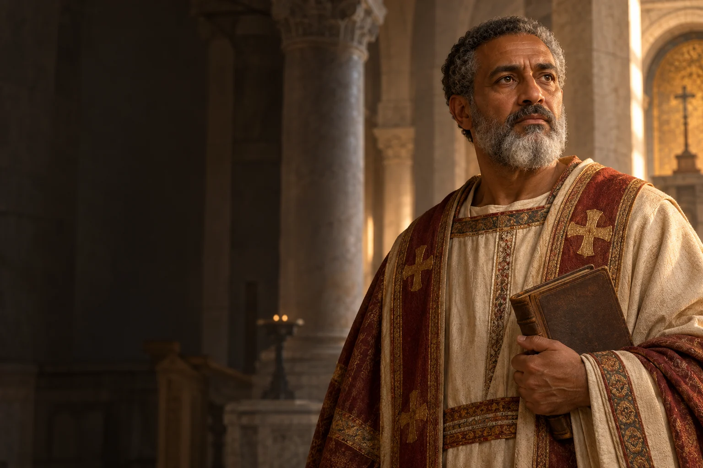

Pytanie i lektura
Wybierz pytanie, które powraca w Twoim życiu, i poszukaj książki pomagającej je pogłębić.

354–430
Obchód liturgiczny: 28 sierpnia
Biskup i teolog, autor Wyznań.
Augustyn z Hippony był nauczycielem retoryki, biskupem i autorem Wyznań, który opisał własną drogę poszukiwania Boga.
Poznaj historię jego życia →Droga do prawdy może obejmować pytania, zmiany i uczciwe spojrzenie na własną historię.
Refleksja redakcji W Modlitwie.Urodził się w Tagaście.
Rozpoczął naukę retoryki w Kartaginie.
Przyjął chrzest w Mediolanie.
Został wyświęcony w Hipponie.
Objął posługę biskupią w Hipponie.
Zmarł podczas oblężenia miasta.
 Współczesne wyobrażenie artystyczne.
Współczesne wyobrażenie artystyczne.Około 3 min czytania · 5 rozdziałów
Augustyn urodził się w 354 roku w Tagaście w rzymskiej Afryce. Jego matka Monika była chrześcijanką. Otrzymał wykształcenie i studiował retorykę w Kartaginie. Wczesne doświadczenia, relacje rodzinne oraz pytania o prawdę i sens życia powróciły później w jego Wyznaniach. Jego historia zaczyna się w świecie Afryki Północnej, stanowiącej część Cesarstwa Rzymskiego.
Augustyn dorastał w środowisku, w którym język, nauka i publiczne przemawianie otwierały drogę do kariery. Edukacja wyposażyła go w narzędzia, których później używał jako nauczyciel, autor listów i kaznodzieja.
Jako młody człowiek zajmował się nauczaniem i długo poszukiwał odpowiedzi w różnych nurtach religijnych i filozoficznych. Przebywał między innymi w Kartaginie, Rzymie i Mediolanie. W Mediolanie spotkał biskupa Ambrożego. Jego droga do chrześcijaństwa nie była pojedynczą decyzją oderwaną od życia: obejmowała lektury, rozmowy, relacje i wewnętrzne zmagania.
W Wyznaniach wracał do kolejnych etapów swojej drogi, przyglądając się nie tylko ideom, ale także własnym pragnieniom. To osobiste spojrzenie nie zastępuje innych świadectw historycznych, daje jednak dostęp do sposobu, w jaki rozumiał swoje doświadczenie.
W 387 roku Augustyn przyjął chrzest z rąk Ambrożego w Mediolanie. Następnie wrócił do Afryki. W tym okresie jego matka Monika zmarła w Ostii. Augustyn zamierzał żyć we wspólnocie i poświęcić czas modlitwie oraz studium. Wkrótce jego życie przybrało jednak kierunek związany z posługą Kościołowi w Hipponie.
Spotkanie z Ambrożym i przyjęcie chrztu nie zakończyły aktywnego życia Augustyna. Po powrocie znalazł się w nowym środowisku obowiązków. Idea wspólnotowego poszukiwania Boga pozostała ważna również wtedy, gdy objął funkcje duszpasterskie.
W Hipponie został kapłanem, a następnie biskupem. Obowiązki duszpasterskie łączył z życiem wspólnotowym i intensywną pracą pisarską. Wyznania są opowieścią o pamięci, poszukiwaniu i nawróceniu; Państwo Boże powstało w kontekście trudnych wydarzeń epoki. Pisał również kazania i listy, podejmując pytania o łaskę, człowieka i wspólnotę Kościoła.
Jako biskup przemawiał do ludzi, rozstrzygał sprawy wspólnoty i prowadził korespondencję. Jego dzieła powstawały więc wśród realnych sporów i obowiązków. Czytając je dzisiaj, warto pamiętać o odmiennych warunkach społecznych i języku epoki.
Augustyn zmarł w 430 roku, gdy Hippona była oblegana. Został uznany za jednego z wielkich nauczycieli Kościoła. Znaczenie jego twórczości wykracza poza biografię: kolejne pokolenia wracały do jego refleksji nad pamięcią, wolą, wiarą i życiem społecznym. Jego droga pozostaje świadectwem, że pytania i poszukiwanie mogą towarzyszyć dojrzewaniu wiary.
Augustyn pozostaje ważny dla teologii i filozofii, lecz jego myśl nie daje się zamknąć w jednym zdaniu. Wyznania zachęcają do uważnego rozważania własnej historii, a jego posługa przypomina o związku refleksji z odpowiedzialnością za innych.
Wyznania nie są wyłącznie chronologicznym życiorysem. Augustyn wraca w nich do przeszłości i pyta o znaczenie doświadczeń, pamięci oraz relacji z Bogiem. To połączenie opowieści i refleksji sprawia, że książka jest czytana także poza środowiskiem teologicznym. Jego poglądy należy poznawać w kontekście sporów oraz języka późnej starożytności.
Wybierz pytanie, które powraca w Twoim życiu, i poszukaj książki pomagającej je pogłębić.

Zapisz ważne doświadczenie i zastanów się, jak rozumiesz je dzisiaj.

Podziel się swoją wątpliwością z kimś, kto potrafi słuchać bez pośpiesznych odpowiedzi.
Ojcze nasz, któryś jest w niebie, święć się imię Twoje; przyjdź królestwo Twoje; bądź wola Twoja jako w niebie, tak i na ziemi. Chleba naszego powszedniego daj nam dzisiaj; i odpuść nam nasze winy, jako i my odpuszczamy naszym winowajcom; i nie wódź nas na pokuszenie, ale nas zbaw ode złego. Amen.
Tradycyjny tekst modlitwy; utrwalony polski wariant.Ojcze nasz →